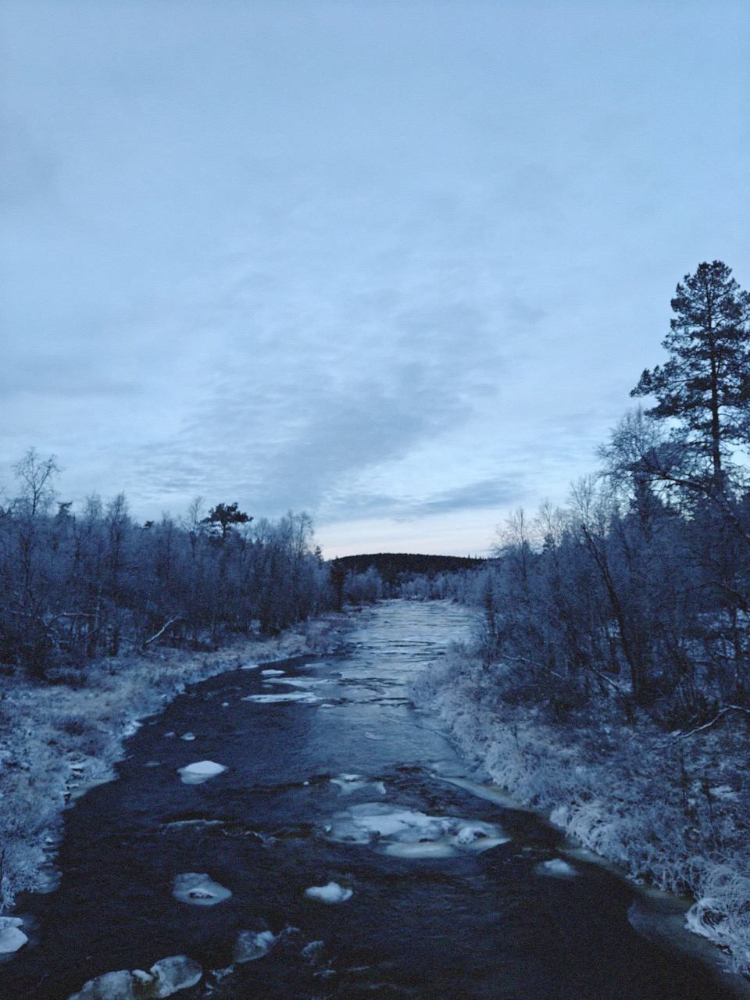

Mulla on yksi toistuva painajainen. Siinä saavun Kutturaan ja löydän sieltä kaivinkoneita, kuorma-autoja, hiekkakasoja, rakenteilla olevia turistimökkejä tai kerrostaloja ja kaikki vanha on tuhottu.
Oon koittanut kirjoittaa tästä monta viikkoa. Oon miettinyt eri argumentteja, ja tietysti vois puhua ympäristöstä tai poronhoidosta tai maanpuolustuksesta tai turvallistamisesta tai vaikka mistä, mutta mulle tämän asian suhteen näillä ei ole oikeasti kauheasti merkitystä.
Merkitystä mulle on sillä, että Kuttura on paikka, jonne mun esivanhemmat saapuivat sen jälkeen, kun niiden piti 1800-luvun puolivälin (kolonialististen) rajalakien takia etsiä uusi paikka missä elää. Ja siellä näiden lapset ja lastenlapset ja lastenlastenlapset syntyi ja kasvoi. Ja siellä nämä kaikki esivanhemmat elää edelleen paikoissa ja tarinoissa, joita muualle töiden perässä muuttanut suku kokoontuu kertomaan vuodesta toiseen.
Kuttura on koti täynnä meidän suvun historian kerrostumia. Eikä koti rajoitu tietenkään vain kylään, vaan kaikkiin puroihin, vaaroihin ja soihin kylän ympärillä, erämaassa, niin sanotussa "tyhjässä maassa", joka on oikeasti täynnä elettyä elämää, jos sitä osaa etsiä. Eivätkä nämä päällekkäiset ajat rajoitu vaan menneisyyteen, vaan myös tulevaisuuteen.
Joku aika sitten postasin siitä, kuinka mun tulevaisuususko on karissut, mutta Kutturassa mä näen vielä jotain, just siks, että sinne kulkee vain yksi 40 kilometrin mittainen tie. Siellä on oikeesti pimeetä öisin, ja kaikki tähdet näkyy. Siellä on oikeesti hiljaista, eikä mistään kuulu autojen melua. Siellä voi kävellä paikkaan, jonka jälkeen tietää ettei joen yläjuoksulle ole rakennettu mitään.
En ymmärrä, miten joku voi suunnitella rakentavansa raskaalle liikenteelle tarkoitetun autotien tämänkaltaisen paikan yli. Kuttura on yksi viimeisistä saamelaisista erämaakylistä. Vaikka karsisi kaiken tämän tunnepitoisen nimbyilyn, niin ihan jo senkin takia alueen säilyttämisen pitäisi olla prioriteetti. Joku voisi ilmoittaa Kutturan maailmanperintöluetteloon tai jotain. Sitten päälle tietysti luontoarvot, hiilinielut ja kaikki muu.
En tiedä, mä en ehkä vain ymmärrä. Mutta jos haluat, niin adressin saa allekirjoittaa. Ollaan puhuttu, että 5000 allekirjoitusta olisi hyvä tavoite, kun viime kerralla sen verran tuli täyteen. Katsotaan, miten tässä käy...
Selitys/selittelyjä
Kirjoitin tämän, jotta saisimme adressille allekirjoituksia. Ällöttää avautuminen, mutta se tuntuu pakolliselta.
Kommentit
JOS HALUAT KOMMENTOIDA JOTAIN, PISTÄ DM. HALUTESSASI VOIN JULKAISTA KOMMENTTISI TÄNNE SIVUN ALAREUNAAN.